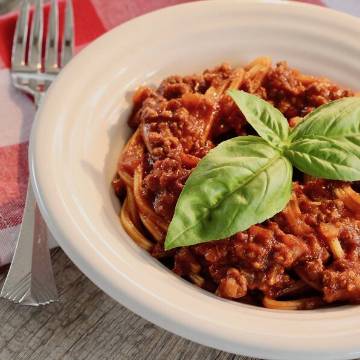

Spagghetti Recipe

ingredients
- 1 pound ground beef
- 3 cups water
- 18 fluid ounces tomato juice
- 1 (6 ounce) can tomato paste
- 2 tablespoons dried minced onion
- 1 ½ teaspoons chili powder, or more to taste
- 1 teaspoon white sugar
- 1 teaspoon dried oregano, crushed
- 1 teaspoon garlic salt
- 1 teaspoon salt
- 7 ounces spaghetti
Steps
- Step 1 Heat a large skillet over medium-high heat. Cook and stir beef in the hot skillet until browned and
crumbly, 5 to 7 minutes.
- Step 2 Mix water, tomato juice, tomato paste, minced onion, chili powder, sugar, oregano, garlic salt, and
salt into ground beef; cover skillet and bring to a boil. Reduce heat to medium-low and simmer beef mixture,
stirring occasionally, until flavors have blended, about 30 minutes.
- Step 3 Place spaghetti into beef mixture and stir to separate strands; cover skillet and simmer, stirring
frequently, until spaghetti is tender, about 30 minutes.